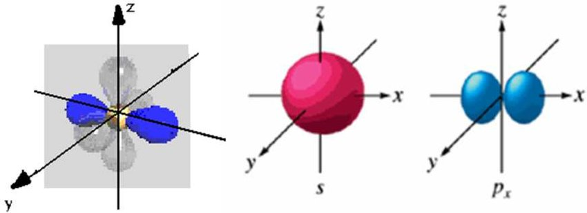
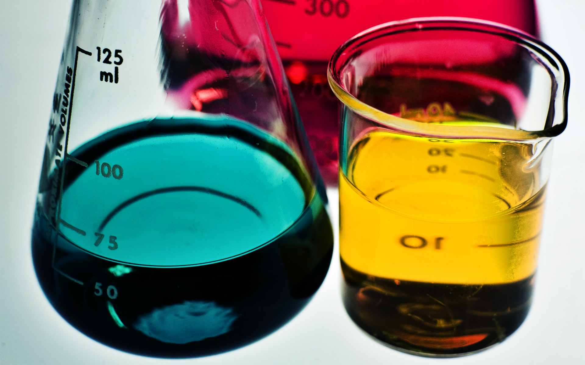

*Please be advised that these resources serve to supplement and not replace your actual chemistry resources. When in doubt, refer to your instructor and textbook for your main source material*
General Chemistry I
General Chemistry II
General Chemistry III
Organic Chemistry I
Organic Chemistry II





Significant Figures and Dimensional Analysis
The Quantum Mechanical Model of the Atom
Periodic Trends and Properties
Chemical Bonding: The Lewis Model
Chemical Bonding: Valence Bonding and Molecular Orbital Theory
Molecules, Compounds, and Chemical Equations
Stoichiometry and Aqueous Reactions
Thermochemistry
Ideal Gasses
Intermolecular Forces and Phases
Solutions and Colligative Properties
Solid-State Chemistry
Chemical Kinetics
Chemical Equilibrum
Acid and Base Chemistry
Aqueous Ionic Equilibria
Coordination Chemistry
Free Energy and Thermodynamics
Electrochemistry
Intro to Organic Chemistry
General Chemistry Review: Electronegativty and Hybridization
Organic Nomenclature and Functional Groups
Visualizations of Organic Molecules
Chirality and Stereochemistry
Substitution Reactions of Alkyl Halides, Sn2 and Sn1
Elimination Reactions of Alkyl Halies, E2 and E1
Reactions of Alkenes
Structural Determination Techniques for Organic Molecules
Nuclear Magnetic Resonance (NMR)
Organometallic Compounds
Reactions of Alcohols, Ethers and Epoxides
Reactions of Aldehydes and Ketones
Carbohydrates
Reactions of Carboxylic Acids and Esters
Aromaticity and the Chemistry of Benzene
Enols and the Enolate Anion
Amines and Amides
Amino Acids, Peptides and Proteins